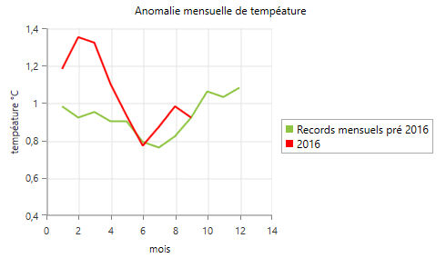
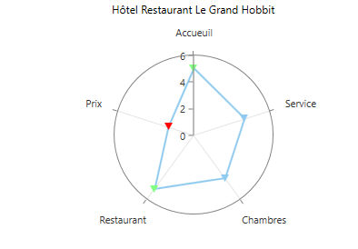
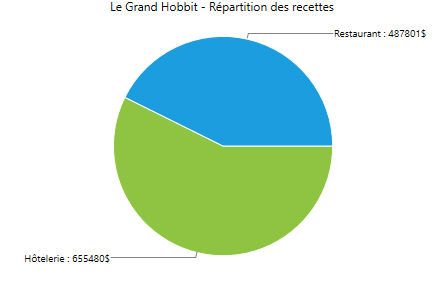

Dans le nouvel objet graphe, le type du graphique devient une des données prépondérante.
L'objet graphe traite trois types de graphique :
- les graphiques cartésiens (histogrammes, nuages de points, etc...)

- les diagrammes polaires.

- les diagrammes circulaires (les "camemberts" ou "PieChart"),

Le type du graphique est une option du graphe.
Un objet graphe ne peut afficher qu'un seul type de graphique à la fois.
Le type de graphique impose la nature des sous-éléments d'un graphe : la notion d'axes n'a, par exemple, pas de sens dans un diagramme circulaire.
La Liste des options des séries détaille, entre autres, quels types de séries sont compatibles avec chacun des types de graphique.
Remarque : le type des séries et la nature des points sont également contraints par le type de l'axe des abscisses (graphiques cartésien) ou l'axe radial (diagramme polaire).